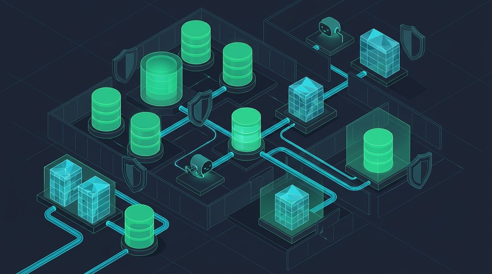
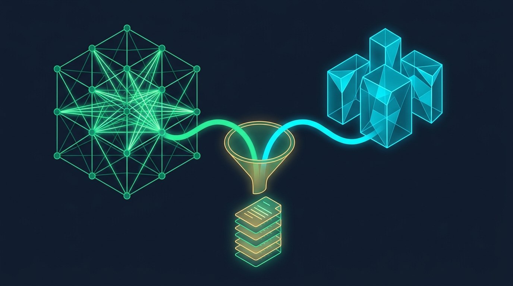
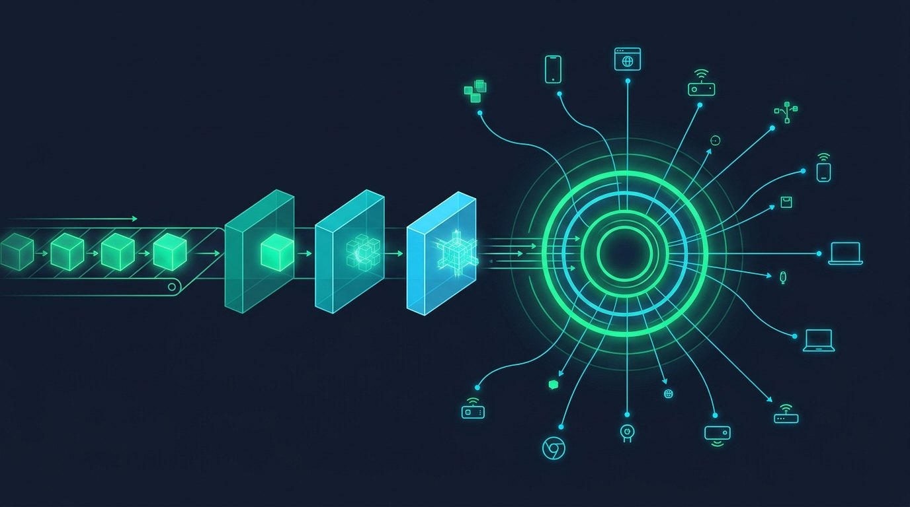

Build secure, multi-tenant agent backends on Postgres using pgvector hybrid search, Row-Level Security (RLS) guardrails, Edge Functions, pgmq queues, Supabase MCP, and official supabase/agent-skills.

tsvector search, and pgmq job queues inside one transactional database.service_role keys.supabase/agent-skills and ephemeral Preview Branches before merging to production.Early AI prototypes glued together a vector database, a Redis queue, a document store, and custom auth middleware—creating sync drift and multi-tenant data leaks. Modern agent backends consolidate memory, retrieval, permissions, and async execution onto a single PostgreSQL engine powered by Supabase.
When an agent executes a tool call on behalf of a user, security cannot rely on prompt instructions. Instead, the user’s JWT travels from the client through your Edge Function or API route straight into Postgres, where Row-Level Security (RLS) filters both relational rows and pgvector embeddings before the LLM ever sees a single token.
service_role key, Postgres physically refuses to return unauthorized rows—even if the agent hallucinates a broad WHERE clause.
Do not stuff long-running LLM loops into synchronous HTTP Edge Functions or rely on pure cosine similarity for SKU lookups. Pick the right Supabase primitive for each phase of your agent lifecycle.
| Primitive | Best-Fit Agent Workload | Key 2026 Capability | Security Boundary | Anti-Pattern to Avoid |
|---|---|---|---|---|
Postgres + RLSpublic / app |
Agent state, thread history, tool audit logs, multi-tenant records | InitPlan (select auth.uid()), partial B-Tree indexes, JSONB |
Row-Level Security + security invoker views |
Using service_role in user-facing agent APIs |
pgvector HybridHNSW + tsvector |
RAG knowledge bases, semantic + exact keyword & ID lookup | pgvector 0.8+ iterative scans, halfvec quantization, RRF SQL |
RLS filters vectors inside the same SQL transaction | Vector-only search without lexical fallback or filters |
Edge FunctionsDeno Runtime |
Auth-checked tool endpoints, webhooks, lightweight AI proxy calls | Globally distributed, low cold-start, native Supabase JWT client | Forward Authorization header to user-scoped client |
Running 5-minute batch scrapes synchronously in HTTP |
Queues & Cronpgmq + pg_cron |
Document chunking, bulk embeddings, retryable agent background jobs | Exactly-once visibility timeout, durable archive, Cron-triggered workers | Private schema + Vault secrets for pg_net calls |
Fire-and-forget promises that die on function timeout |
Branching 2.0Preview / Persist |
Safe AI-authored schema migrations, RLS testing, PR previews | Data-less isolated clones with Edge Functions & migration history | Isolated credentials; zero production PII by default | Letting coding agents run DDL directly on production |
ON DELETE CASCADE.hnsw.iterative_scan keeps scanning the graph until LIMIT k rows pass your tenant RLS filter.halfvec(1536) cuts index memory by 50% with negligible recall loss.pgvectorscale or binary quantization.document_chunks tables by org_id or time range so each HNSW index stays hot in memory.EXPLAIN (ANALYZE, BUFFERS)—90% of slowdowns come from an unindexed RLS column or an unwrapped auth.uid() call.
Before giving an AI agent access to your database, master these seven high-leverage controls spanning Supabase Studio’s SQL/RLS workspace, Security Advisors, and live Supabase MCP audit logs.
authenticated (org_9f2a)
4
public.document_chunks
5
org_id = (select private.current_org_id())owner_id = (select auth.uid())get_advisors(security) → 0 criticalapply_migration → BLOCKED (read_only)create_branch → feat/rls-hybrid-raggenerate_typescript_types → 200 OKembed_jobs: 4 queued
1Branch Switcher: Isolates agent schema edits on a data-less Preview Branch before any migration touches production.
2MCP Scope Badge: Confirms project_ref pinning and read_only=true so coding agents cannot mutate production tables.
3Security & Perf Advisors: Flags tables missing RLS, unindexed foreign keys, and security definer view leaks automatically.
4Role Impersonation Runner: Tests SQL/RPC queries as a specific authenticated user JWT rather than Postgres superuser.
5RLS Policy Inspector: Audits every command (SELECT, INSERT, UPDATE, DELETE) to verify explicit TO authenticated clauses.
6MCP & Edge Logs (query_logs): Lets you (or a debugging agent) run read-only SQL over 24 hours of Edge Function and Auth traces.
7Supavisor & Queue Telemetry: Monitors Transaction Pooler saturation (port 6543) and pgmq embedding worker backlogs.
postgres in the SQL Editor bypass RLS completely. Always toggle Role Impersonation (#4) to a real test user—or wrap tests in SET LOCAL role = authenticated; SET LOCAL request.jwt.claims = '...';—before shipping an agent tool.
pgvector & RRFPure semantic embeddings excel at conceptual intent (“cancel my plan”) but miss exact error codes, SKUs, and proper nouns (“ERR_409_STRIPE”). Combining HNSW vector search with Postgres GIN full-text search via Reciprocal Rank Fusion (RRF) delivers enterprise-grade RAG recall inside one SQL call.

tsvector matches (right) are scored independently and merged via RRF: score = 1/(k + rank_sem) + 1/(k + rank_fts) with default smoothing constant k = 60.
CREATE EXTENSION IF NOT EXISTS vector;
CREATE TABLE public.doc_chunks (
id bigint GENERATED ALWAYS AS IDENTITY PRIMARY KEY,
org_id uuid NOT NULL,
content text NOT NULL,
fts tsvector GENERATED ALWAYS AS
(to_tsvector('english', content)) STORED,
embedding halfvec(1536) NOT NULL
);
-- Fast ANN + Full-Text + Tenant Filter Indexes
CREATE INDEX doc_chunks_hnsw_idx ON public.doc_chunks
USING hnsw (embedding halfvec_cosine_ops)
WITH (m = 16, ef_construction = 64);
CREATE INDEX doc_chunks_fts_idx ON public.doc_chunks
USING gin (fts);
CREATE INDEX doc_chunks_org_idx ON public.doc_chunks (org_id);CREATE OR REPLACE FUNCTION public.hybrid_search(
query_text text, query_emb halfvec(1536),
match_count int DEFAULT 8, rrf_k int DEFAULT 60
) RETURNS TABLE (id bigint, content text, score float)
LANGUAGE sql STABLE SECURITY INVOKER AS $$
WITH fts AS (
SELECT id, row_number() OVER (
ORDER BY ts_rank_cd(fts, websearch_to_tsquery(query_text)) DESC
) AS rank_ix FROM public.doc_chunks
WHERE fts @@ websearch_to_tsquery('english', query_text)
LIMIT match_count * 2
),
sem AS (
SELECT id, row_number() OVER (
ORDER BY embedding <=> query_emb
) AS rank_ix FROM public.doc_chunks
ORDER BY embedding <=> query_emb
LIMIT match_count * 2
)
SELECT d.id, d.content,
(COALESCE(1.0/(rrf_k + fts.rank_ix), 0.0) +
COALESCE(1.0/(rrf_k + sem.rank_ix), 0.0))::float AS score
FROM fts FULL OUTER JOIN sem ON fts.id = sem.id
JOIN public.doc_chunks d ON COALESCE(fts.id, sem.id) = d.id
ORDER BY score DESC LIMIT match_count;
$$;org_id or RLS could return fewer than LIMIT k rows if top-k graph neighbors belonged to other tenants. On pgvector 0.8+, enable SET LOCAL hnsw.iterative_scan = relaxed_order; inside your search RPC so Postgres automatically expands the HNSW traversal until your tenant’s quota is filled.
Every table exposed to Supabase’s Data API or queried by an agent must enforce RLS. A single missing policy or accidental service_role client in an agent tool turns a prompt injection into a cross-tenant data breach.
SELECT, INSERT, UPDATE, and DELETE policies instead of FOR ALL so read-only agents cannot mutate rows.
TO authenticated. Unauthenticated anon requests short-circuit in < 0.1 ms instead of scanning tables.
(SELECT auth.uid()) so Postgres caches the UUID once per query rather than re-evaluating per row (up to 20× faster).
org_id IN (SELECT ...) via a SECURITY DEFINER helper in a non-exposed private schema (with SET search_path = '') to avoid recursive RLS joins.
USING gates which existing rows an agent can read or target; WITH CHECK validates new/updated row payloads so an agent cannot forge another tenant’s org_id.
service_role Danger| Auth Pattern | How It Works | RLS Enforcement | When to Use in Agent Systems |
|---|---|---|---|
User JWT Forwardinganon/publishable + Bearer |
Pass user’s Authorization header into createClient() inside Edge Function / API route |
100% Enforced (Postgres sees exact auth.uid() & claims) |
Default for all user-facing agent tools, RAG search, and memory writes |
Scoped Custom Roleagent_reader |
Dedicated Postgres role with explicit GRANT SELECT on specific views/columns only |
Table + Column Scoped (optionally + RLS) | Autonomous analytics / BI agents querying aggregated reporting views |
service_role Keybypassrls = true |
Admin key that skips every RLS policy on every table in the database | BYPASSED COMPLETELY | Background trusted workers only (e.g., pgmq embedder, Stripe webhooks) |
security_invoker = truepostgres), silently bypassing RLS! Always create agent-facing views with CREATE VIEW v WITH (security_invoker = true) AS ... and run Supabase Security Advisors on every PR.
supabase/agent-skills
Stop copy-pasting table schemas and slow query plans into chat. Pair Supabase’s hosted Remote MCP Server (with OAuth and read-only guardrails) with the official supabase/agent-skills repository so coding agents write production-grade Postgres from the first prompt.
Pin project_ref, enable read_only=true for production debugging, and restrict features to only needed tool groups:
{
"mcpServers": {
"supabase": {
"type": "http",
"url": "https://mcp.supabase.com/mcp?project_ref=YOUR_REF&read_only=true&features=database,docs,debugging"
}
}
}supabase/agent-skillsEquips Claude Code, Cursor, Codex, and Windsurf with Supabase’s curated Postgres rules across 8 impact-ordered categories:
npx skills add supabase/agent-skills \
--skill supabase-postgres-best-practicespgvector/pgmq.EXPLAIN proofs.| Environment | Recommended MCP Mode | Allowed Agent Actions | Risk Mitigated |
|---|---|---|---|
Productionmain project |
read_only=true + features=debugging,docs (or no MCP) |
Run query_logs (24h window), inspect get_advisors, analyze slow queries |
Blocks destructive DDL, rogue writes, and data tampering |
Preview Branchfeat/* PR clone |
Branch-scoped MCP (project_ref=branch_ref) |
apply_migration, create RLS policies, deploy Edge Functions, regenerate TS types |
Data-less clone prevents PII exfiltration while testing real SQL |
| Runtime End-User Agent | PostgREST / User-JWT API (NOT Management MCP) | Execute approved RPCs and RLS-filtered queries as authenticated user | Prevents prompt-injected agents from reading cross-tenant tables |
read_only=true Does NOT Stopembed-worker timed out.”database.types.ts.”pgmq Queues & Realtime Agent Streams
Keep HTTP request paths fast and resilient. Offload document parsing, chunking, and embedding API calls to Supabase Queues (pgmq) triggered by pg_cron, and stream live agent progress back to the browser over Supabase Realtime.

pgmq inside the same Postgres transaction → pg_cron invokes a Deno Edge Function worker → worker embeds chunks into pgvector → Realtime broadcasts completion to subscribed clients.
pgmq + pg_cron-- 1. Create durable queue in Postgres
SELECT pgmq.create('embed_jobs');
-- 2. Trigger enqueues job atomically on doc insert
CREATE OR REPLACE FUNCTION private.enqueue_embed()
RETURNS trigger LANGUAGE plpgsql SECURITY DEFINER AS $$
BEGIN
PERFORM pgmq.send('embed_jobs',
jsonb_build_object('doc_id', NEW.id, 'org_id', NEW.org_id));
RETURN NEW;
END; $$;
-- 3. Poll every 10s via pg_cron + pg_net + Vault secret
SELECT cron.schedule('drain-embed-jobs', '10 seconds', $$
SELECT net.http_post(
url := 'https://<ref>.supabase.co/functions/v1/embed-worker',
headers := jsonb_build_object(
'Authorization', 'Bearer ' ||
(SELECT decrypted_secret FROM vault.decrypted_secrets
WHERE name = 'worker_secret')
)
);
$$);// supabase/functions/embed-worker/index.ts
const { data: jobs } = await admin.schema('pgmq')
.rpc('read', { queue_name: 'embed_jobs', vt: 60, qty: 10 });
for (const job of jobs ?? []) {
const { doc_id, org_id } = job.message;
const vec = await embedText(await fetchDoc(doc_id));
await admin.from('doc_chunks').upsert({
doc_id, org_id, embedding: vec
});
// Archive completed message for audit trail
await admin.schema('pgmq').rpc('archive', {
queue_name: 'embed_jobs', msg_id: job.msg_id
});
// Push live status to tenant UI without polling
await admin.channel(`org:${org_id}:agents`).send({
type: 'broadcast', event: 'doc_indexed',
payload: { doc_id, status: 'ready' }
});
}pgmq Beats External Queues for Agent Backendspgmq lives inside Postgres, you get the Transactional Outbox pattern for free: inserting a document and enqueuing its embedding job commit atomically. If a worker crashes mid-LLM call, the vt: 60 visibility timeout automatically makes the message visible again for retry—zero lost jobs, zero Redis ops.
Battle-tested building blocks you can drop directly into your migrations and Edge Functions to cover agent memory, multi-tenant isolation, semantic caching, and token-budget auditing.
| Recipe | Problem Solved | Postgres Primitive | Target Latency / Benefit |
|---|---|---|---|
| 1. User-Scoped Edge Client | Prevent RLS bypass in agent tool endpoints | JWT Header Forwarding | Zero cross-tenant leakage |
| 2. Semantic Prompt Cache | Avoid paying for repeated identical LLM queries | halfvec + cosine < 0.06 |
< 25 ms cache hit; 40–70% savings |
| 3. Thread Memory + TTL | Store resumable agent checkpoints cleanly | JSONB + pg_cron sweep |
Bounded table bloat |
| 4. Per-Tenant Token Ledger | Enforce monthly LLM spend limits atomically | INSERT ... ON CONFLICT |
Race-free quota enforcement |
| 5. Safe RLS Unit Test | Verify tenant isolation in CI before deploy | SET LOCAL role + claims |
Catches regressions on PR |
import { createClient } from 'jsr:@supabase/supabase-js@2';
export function getUserClient(req: Request) {
const auth = req.headers.get('Authorization') ?? '';
return createClient(
Deno.env.get('SUPABASE_URL')!,
Deno.env.get('SUPABASE_ANON_KEY')!,
{ global: { headers: { Authorization: auth } } }
);
} // All .rpc() & .from() calls now obey Postgres RLS!SELECT response_text FROM public.llm_cache
WHERE org_id = (SELECT private.current_org_id())
AND created_at > now() - interval '24 hours'
AND (prompt_emb <=> $1::halfvec(1536)) < 0.06
ORDER BY prompt_emb <=> $1::halfvec(1536) LIMIT 1;pg_cronSELECT cron.schedule('prune-old-checkpoints', '0 3 * * *', $$
DELETE FROM public.agent_checkpoints
WHERE updated_at < now() - interval '30 days';
$$);CREATE OR REPLACE FUNCTION private.consume_tokens(
p_org uuid, p_tokens int, p_limit int
) RETURNS boolean LANGUAGE plpgsql AS $$
DECLARE v_used int;
BEGIN
INSERT INTO private.token_usage (org_id, month, tokens)
VALUES (p_org, date_trunc('month', now())::date, p_tokens)
ON CONFLICT (org_id, month)
DO UPDATE SET tokens = token_usage.tokens + EXCLUDED.tokens
WHERE token_usage.tokens + EXCLUDED.tokens <= p_limit
RETURNING tokens INTO v_used;
RETURN v_used IS NOT NULL;
END; $$;BEGIN;
SET LOCAL role = authenticated;
SET LOCAL request.jwt.claims = '{"sub":"user-A","org_id":"org-A"}';
-- Must return 0 rows belonging to org-B:
DO $$ BEGIN
IF EXISTS (SELECT 1 FROM public.doc_chunks WHERE org_id = 'org-B')
THEN RAISE EXCEPTION 'RLS BREACH: Cross-tenant read detected!';
END IF;
END $$;
ROLLBACK;
Autonomous agents generate bursty, high-concurrency database traffic. Without proper connection pooling, secret hygiene, and least-privilege roles, a viral agent launch will exhaust max_connections in seconds.
6543)6543 borrows a Postgres backend only for the duration of a single transaction, multiplexing thousands of agent workers over a small pool.prepare: false (postgres.js / Drizzle) or pgbouncer=true (Prisma) because transaction pooling rotates backend connections.5432: Use Session Mode / Direct connection only for DDL migrations, pg_dump, or long-lived LISTEN/NOTIFY workers.vault.secrets (encrypted via libsodium).pg_cron and pg_net read secrets at runtime via vault.decrypted_secrets instead of embedding plaintext keys in migration files.vault via PostgREST schemas; restrict reads strictly to SECURITY DEFINER functions.| Operational Layer | Hardening Standard | Verification Command / Check |
|---|---|---|
| Read-Only Agent Role | Create a dedicated role (ai_analyst) with statement_timeout = '5s' and GRANT SELECT on curated views only. |
ALTER ROLE ai_analyst SET statement_timeout = '5s';ALTER ROLE ai_analyst SET default_transaction_read_only = on; |
| Schema Exposure | Keep internal queues, helper functions, and token ledgers in a private schema excluded from PostgREST API settings. |
Dashboard → API Settings → Exposed schemas = public only |
| Point-in-Time Recovery | Enable PITR on production projects so an accidental bulk agent UPDATE or bad migration can rewind to the exact second. |
Verify daily backups + PITR WAL archiving status in Dashboard → Backups |
| Index & Bloat Hygiene | Monitor pg_stat_statements weekly; tune autovacuum on high-churn agent_checkpoints and pgmq tables. |
Run Supabase Performance Advisor + SELECT * FROM pg_stat_user_tables; |
statement_timeout (preventing runaway full-table vector scans) with an atomic per-tenant token ledger (Recipe 4) and Supavisor pool limits so one misbehaving agent session can never starve other tenants.
The fastest AI engineering teams combine supabase/agent-skills, Preview Branches, and the Vercel AI SDK into a deterministic loop where every schema change is tested, typed, and RLS-verified before it ever reaches production.
// app/api/agent/route.ts — Next.js + Vercel AI SDK + Supabase SSR
import { streamText, tool } from 'ai';
import { z } from 'zod';
import { createServerClient } from '@/lib/supabase/server';
export async function POST(req: Request) {
const supabase = await createServerClient(); // Reads user session JWT from cookies
const { messages } = await req.json();
return streamText({
model: 'anthropic/claude-sonnet-4.5',
messages,
tools: {
searchKnowledgeBase: tool({
description: 'Hybrid semantic + keyword search over tenant documents',
inputSchema: z.object({ query: z.string().min(2) }),
execute: async ({ query }) => {
const emb = await embedQuery(query);
// Executes under user JWT -> RLS automatically enforces org_id isolation
const { data, error } = await supabase.rpc('hybrid_search', {
query_text: query, query_emb: emb, match_count: 6
});
if (error) throw error;
return data;
},
}),
},
}).toUIMessageStreamResponse();
}
After your agent applies a migration to the Preview Branch, run supabase gen types typescript --linked > lib/database.types.ts (or invoke MCP’s generate_typescript_types) so your AI SDK tool inputs and RPC return types stay 100% compiler-checked.
With the official Supabase–Vercel integration, every GitHub PR automatically injects the Preview Branch’s SUPABASE_URL and keys into Vercel’s preview deployment—letting QA test full agent chat flows against isolated schema changes.
Bookmark this diagnostic table for the seven most common failure modes in Postgres-backed AI agents, then sign off on all six pre-flight checks before opening production traffic.
| Symptom / Error | Root Cause | Exact Fix |
|---|---|---|
1. Agent RPC returns [] |
RLS enabled on table, but no SELECT policy or missing Authorization header. |
Forward user JWT into createClient() and verify explicit FOR SELECT TO authenticated policy. |
| 2. Filtered RAG returns < k rows | HNSW top-k candidates belonged to other tenants before RLS filtered them out. | Enable SET LOCAL hnsw.iterative_scan = relaxed_order; inside your pgvector 0.8+ search RPC. |
3. prepared statement already exists |
ORM/driver using prepared statements over Supavisor Transaction Mode (port 6543). |
Set prepare: false (Drizzle/postgres.js) or ?pgbouncer=true (Prisma) on port 6543. |
| 4. RLS query takes 200ms+ | Unwrapped auth.uid() re-runs per row, or missing index on org_id/user_id. |
Wrap as (SELECT auth.uid()) for InitPlan caching and add a B-Tree index on the RLS filter column. |
| 5. Cross-tenant leak in View | Postgres views default to creator privileges (postgres), bypassing caller RLS. |
Recreate with CREATE VIEW ... WITH (security_invoker = true) and re-run Security Advisors. |
| 6. Edge Function 504 timeout | Synchronous chunking/embedding loop exceeded HTTP request timeout. | Return 202 Accepted immediately; enqueue job in pgmq and drain asynchronously via pg_cron. |
7. max_connections exhausted |
Serverless agent workers connecting directly to port 5432 instead of pooler. |
Switch app runtime to Supavisor Transaction Pooler (port 6543); keep 5432 for migrations only. |
security definer views, and all RLS filter columns indexed.service_role in Agent Routes: Every user-facing Edge Function and AI SDK tool forwards the user JWT; service_role lives strictly in private background workers.hybrid_search uses halfvec HNSW + GIN tsvector + iterative scan, tested under EXPLAIN (ANALYZE, BUFFERS) at < 60 ms p95.read_only=true (or disabled); all agent migrations validated on ephemeral Preview Branches first.6543 with prepared statements disabled; pg_cron / pg_net tokens stored in vault.secrets.statement_timeout, atomic token ledgers cap spend, and Point-in-Time Recovery is enabled.